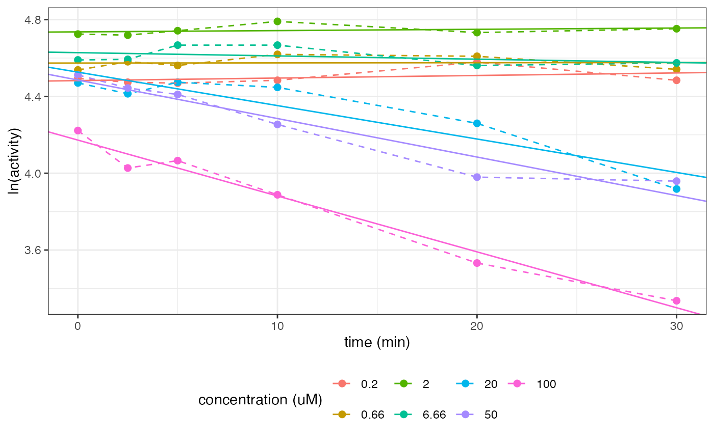
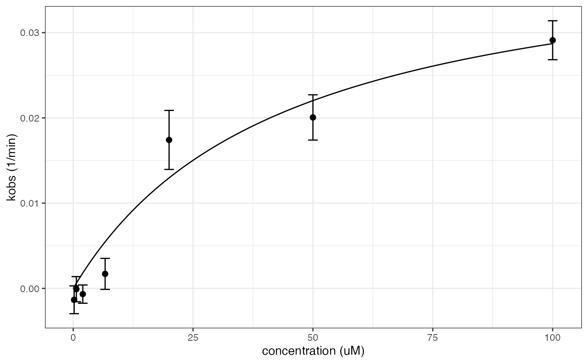

Derive TDI parameters from enzyme activity data
tdimod.Rd![[Experimental]](figures/lifecycle-experimental.svg)
Value
A list with the following items:
data The input data with linear models of ACT over TIME by CONC.
kobs The kobs parameters by precipitant concentration.
kobs_plot A ggplot object showing the kobs fit to the ACT data.
tdi_param The TDI parameters, Kinact and KI, derived from an Emax model of kobs over CONC.
tdi_plot A ggplot object showing the Emnax modeling of kobs over CONC.
Details
kobs is fitted to the enzyme activity data as a first-order process for each inhibitor concentration. kinact (the maximal inhibition rate) and KI (inhibitor concentration at the half-maximal kobs) are fitted from kobs over inhibitor concentration using a Emax model.
Examples
tdimod(examplinib_in_vitro_tdi)
#> $data
#> # A tibble: 7 × 4
#> # Rowwise: CONC
#> CONC data mod modpar
#> <dbl> <list<tibble[,3]>> <list> <list>
#> 1 0.2 [6 × 3] <lm> <tibble [2 × 5]>
#> 2 0.66 [6 × 3] <lm> <tibble [2 × 5]>
#> 3 2 [6 × 3] <lm> <tibble [2 × 5]>
#> 4 6.66 [6 × 3] <lm> <tibble [2 × 5]>
#> 5 20 [6 × 3] <lm> <tibble [2 × 5]>
#> 6 50 [6 × 3] <lm> <tibble [2 × 5]>
#> 7 100 [6 × 3] <lm> <tibble [2 × 5]>
#>
#> $kobs
#> # A tibble: 7 × 4
#> # Groups: CONC [7]
#> CONC kobs std.error p.value
#> <dbl> <dbl> <dbl> <dbl>
#> 1 0.2 -0.00133 0.00163 0.459
#> 2 0.66 -0.0000905 0.00147 0.954
#> 3 2 -0.000668 0.00107 0.566
#> 4 6.66 0.00170 0.00182 0.402
#> 5 20 0.0174 0.00346 0.00732
#> 6 50 0.0201 0.00266 0.00165
#> 7 100 0.0291 0.00228 0.000218
#>
#> $kobs_plot

#>
#> $tdi_param
#> # A tibble: 2 × 5
#> term estimate std.error statistic p.value
#> <chr> <dbl> <dbl> <dbl> <dbl>
#> 1 kinact 0.0412 0.00987 4.17 0.00870
#> 2 kI 43.6 24.0 1.82 0.129
#>
#> $tdi_plot

#>